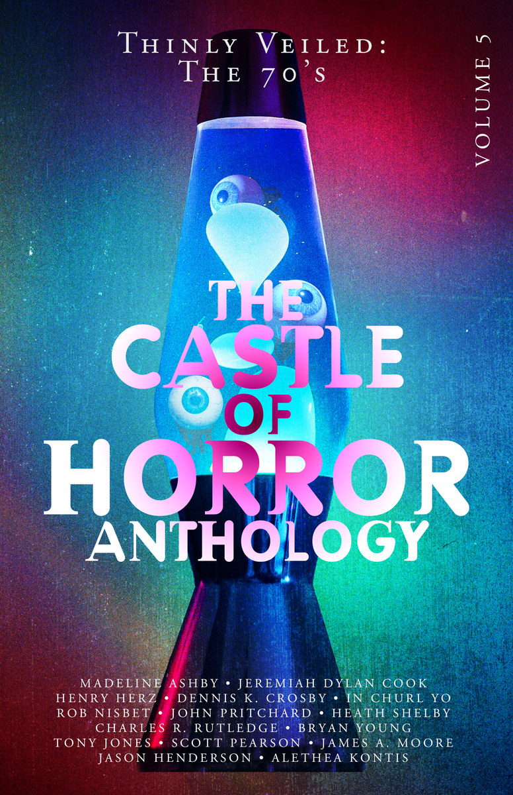

Castle of Horror Anthology Volume 5: Thinly Veiled: The 70's
Enter a very strange wing of the Castle of Horror--a wing of reflections of the familiar. Specifically: reflections of the 1970s, from TV sitcoms like THE ODD COUPLE to films like HALLOWEEN and THREE DAYS OF THE CONDOR. But every one of them-- from the mismatched roomate bachelors to the bus-traveling pop star family-- are all "thinly veiled" and sent into a horror story of their own. See if you can recognize them all! Featuring stories from Jason Henderson, In Churl Yo, Henry Herz, Alethea Kontis, Scott Pearson, John Pritchard, James A Moore, Rob Nisbet, Dennis K. Crosby, Heath W. Shelby, Jeremiah Dylan Cook, Tony Jones, Bryan Young, and Charles R. Rutledge.